New names:
New names:
• `` -> `...36`
• `` -> `...37`[1] 0The existent diagnostic tools for space sequence synethesia are based on questionnaire and response consistency. Consistency is calculated as the area between repetitions for the same inducer. In the first present phase, available data from 570 participants is used to explore new geometrical features to discriminate syntheses from controls. Conceptually, our goal is to take advantage of the inducer’s ordinality that create synesthetic forms. For this aim, we harness a geography package to extract geometrical features to use as a test for synethesia. Reciever Operator Characteristics are used to select the features that best diagnose synesthesia. In a second phase to come, we test the predictive power of the new diagnostic features onto newly collected dataset.
Synesthesia is the concomitant perception from two different senses, for example certain humans perceive numbers as having a well defined position in space. Synesthetes come in all colour and flavours such as …
Space Sequence Synesthesia (SSS) is a phenomenon present in some humans who perceive a spatial property for sequentially ordered or organized stimuli such as time or numbers, as early described by (Galton 1880). The estimated prevalence for SSS in the general population span between 4.4 % (Brang et al. 2013) and 14.2 % (Seron et al. 1992), see also (Ward et al. 2018; Sagiv et al. 2006). These estimates depend on diagnostic criteria for SSS. A strict definition of Synesthes requires this five different criteria (Deroy and Spence 2013):
Automaticity: the inducer automatically triggers the concurrent. For example February might automatically trigger a specific location in the top left peri-space. Analogously to a colour word activates the colour in human literates (see stroop effect).
Unidirectionality: the inducer triggers the concurrent but the concurrent trigger the inducer. For example if February automatically triggers the top left pei-space, the top-left peri space does not trigger February.
Consciousness: The experience is conscious. For example a synesthete is conscious of his or her perception of February in the top left peri-space.
Development: Should be present early in development. For example seeing month in particular spatial location already occurred as a child.
Consistency: inducer-concurrent pair is stable in time. For example February is perceived on the top left, whether the time of the day or age. (Altough some changes might occur with aging).
Consistency is the most suited for experimental settings since it can be tested by repeatedly presenting specific inducers to participants and collect the responses for their concurrent. If comparatively similar responses are given for the same inducers, then syneshtesia could be detected. Those tests have become the golden standart to detect synesthesia successfully, for example colour-grapheme synesthesia using colour picker (Rothen et al. 2013). The transposition of this method to SSS have however not yelded convincing criteria (see Ward, Roten). Instead of colour picker, SSS are asked to position a set of inducer on their idiosyncratic concurrent location on the screen. If each inducer is repeated several times we can then compute the area between the responses for each inducer (i.e. a triangle if repeated three times). The sum or grand average of the triangle areas across several inducers of several conditions (i.e. number, weekdays and months) is then used to estimate individual consistencies. The smallest the total, the more consistent individual responses area. Despite yealding to satisfactory results, it leads to several limits: participant can give a response in the same position of the screen and obtain excellent consistency scores.
In addition the method might over-diagnose SSS for some conditions (tpyes of)?. Month contain 12 stimuli, while weekdays 7, hence SSS with consistent spatial representations for months might have a higher weight on the final diagnostic criteria than if weekdays are consistent.
In the following we aimed at taking advantage of two property of synthetic responses: they give rise to a form (i.e. number form, see Galton) that follows a sequential order (or ordinality ).
We harnessed a geographical package [ADD REF] to extract geometrical features from participant responses. For example we can extract polygons from each conditions and compute the area of these polygons.
Phase I: present analyses. First, we reproduce the diagnostic criteria of each respective dataset. Second, we merge the dataset and compare the diagnostic criteria across datasets using Reciever Operator Charachteristics (ROC). Third, we compare wheter the featuers lead to somilar ROC charachteristics across the different sets (i.e. for months, weeks and numbers). Fourth, we compute new candidate geometrical features that could be used to diagnose SS. Finally we summarize and compare all ROC and select the best features that class synesthetes from control with the merged dataset.
Phase II: future analyses. On a future dataset using the same task, we will compare the predictive power of the selected features using ROC.
A the exception of (Rothen et al. 2016), the data from (Ward, n.d.; Van Petersen et al. 2020a) were collected online. The 29 inducers were: the 12 months of a year, 7 days of the week and 10 numbers (i.e. hindo-arabic numerals from 0 to 9). (Van Petersen et al. 2020a) Also presented 50 and 100 numerals, which we excluded here. (Ward, n.d.) data is collected using the Syntoolkit.
The details for each procedure is described in each respective article (Rothen et al. 2016; Ward, n.d.; Van Petersen et al. 2020a), here we describe the common task.
Each participant is presented with one one inducer at a time at the center of a otherwise white screen. The participant is instructed to click at the screen position that they visualize them. Inducers order is randomized and each inducer is repeated three times.
The order of the stimuli was randomised, but such that no stimulus was repeated until the previous batch of unique stimuli (N = 29) had been presented.
The data for phase I, comes from: (Rothen et al. 2016),(Ward, n.d.) (from: https://osf.io/p5xsd/files/osfstorage) and (Van Petersen et al. 2020b)
New names:
New names:
• `` -> `...36`
• `` -> `...37`[1] 0Warning: Using one column matrices in `filter()` was deprecated in dplyr 1.1.0.
ℹ Please use one dimensional logical vectors instead.We exclude 2 participants for which we could not compute the z-scores.
`summarise()` has grouped output by 'group'. You can override using the
`.groups` argument.| dataSource | Ctl | Syn |
|---|---|---|
| PeterCor | 21 | 12 |
| Rothen | 37 | 33 |
| Ward | 215 | 252 |
First, we replicate consistency methods found in the literature using the same task ((Rothen et al. 2016; Ward, n.d.; Van Petersen et al. 2020a; Root et al. 2021)) and compare the results.
Second, we extract features based on the form. (C) We harness a geography package to compute segment based features (D) We compute polygon based features. (E) Convex Hull (F) Angles.
Each feature is presented with the following structure:
Compute Feature
Example
Receiver Operator Characteristics (ROC)
Definition: Calculating consistency Each stimulus is represented by three xy coordinates - (x1, y1), (x2, y2), (x3, y3) - from the three repetitions. For each stimulus, the area of the triangle bounded by the coordinates is calculated as follows:
\(Area = (x1y2 + x2y3 + x3y1 – x1y3 – x2y1 – x3y2) / 2\)
Here we reproduce (Rothen et al. 2016) ROC results:
`summarise()` has grouped output by 'ID'. You can override using the `.groups`
argument.
Setting levels: control = Ctl, case = Syn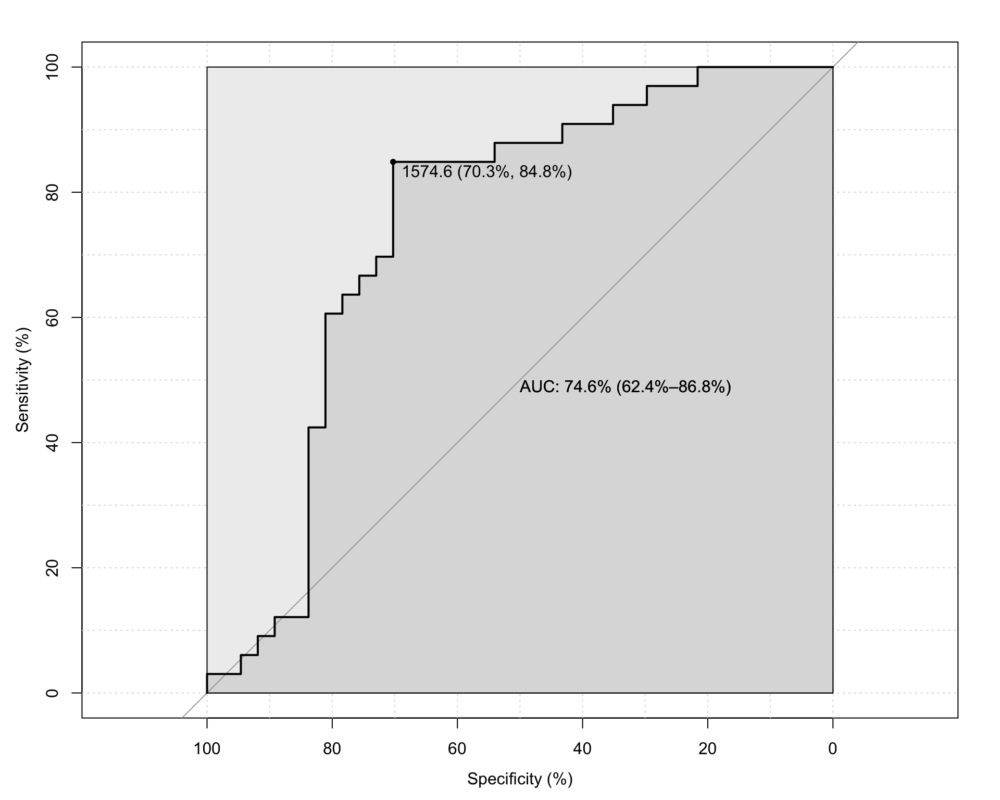
| Feature | AUC | threshold | sensitivity | specificity | ppv | npv | ci_low | ci_high |
|---|---|---|---|---|---|---|---|---|
| triangle_area_GA_Rothen | 74.611 | 1574.552 | 84.84848 | 70.27027 | 71.79487 | 83.87097 | 62.44444 | 86.77751 |
| group | n | Mean | SD |
|---|---|---|---|
| Ctl | 37 | 7030.922 | 11303.051 |
| Syn | 33 | 1311.875 | 1828.799 |
Feature AUC threshold sensitivity specificity ppv
1 triangle_area_GA_Rothen 74.611 1574.552 84.84848 70.27027 71.79487
npv ci_low ci_high
1 83.87097 62.44444 86.77751| Descriptive | DP | AUC | Mean (syn) | Mean (con) | SD (syn) | SD (con) | Sensitivity | Specificity | Cut-off | |
|---|---|---|---|---|---|---|---|---|---|---|
| Rothen | Area | 1.57 | 0.76 | 1079 | 7031 | 1365 | 11149 | 88 | 70 | 1,596 |
| Repro | 0.75 | 1312 | 7031 | 1829 | 11303 | 85 | 70 | 1,575 |
(Ward, n.d.) combines different individual measures and features to diagnose synesthesia in comparison to randomly permuted z-score chance level thresholds:

Since we do not have questionnaire for all the data, we will only try to reproduce the consistency and sd combination.
The mean area is calculated by adding together the area for each stimulus and dividing by 29. This unit is transformed into a percentage area taking into account the different pixel resolution of each participant.Mean area = \(Summed Area / Screen Area\), where: \(Screen Area = Xpixels * Ypixels\)
Adding missing grouping variables: `ID`Would need an example with all in the center


Setting levels: control = Ctl, case = Syn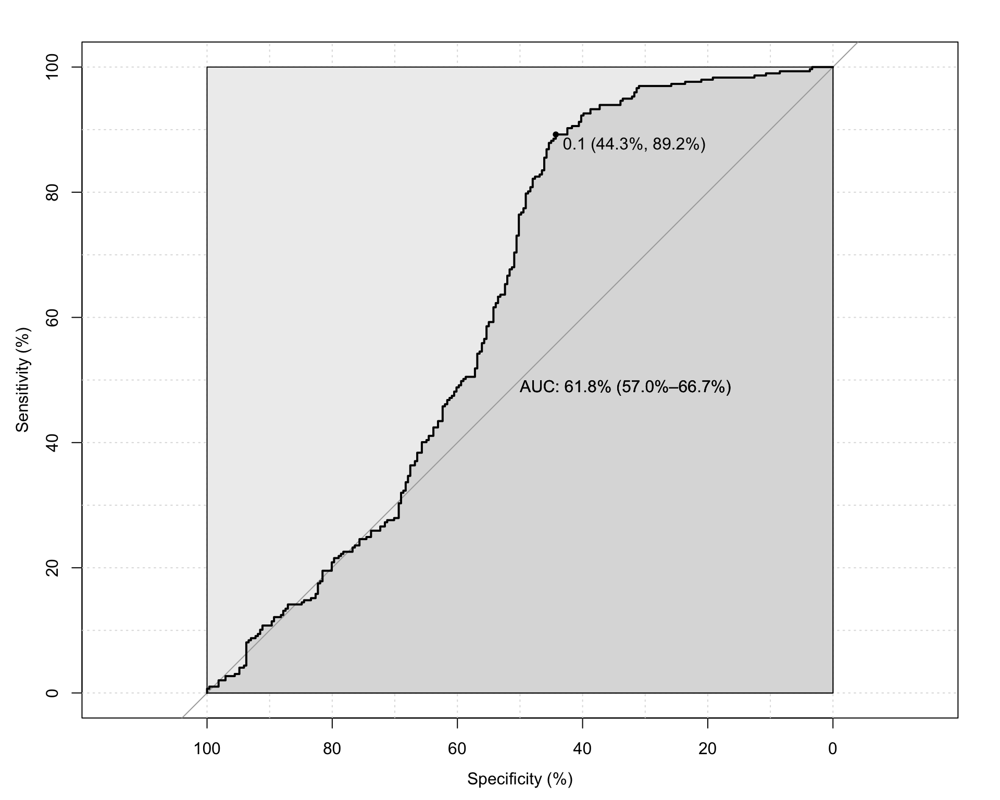
$ROC_properties
Feature AUC threshold sensitivity specificity ppv npv ci_low
1 SD_ID_xsc 61.8348 0.1217639 89.22559 44.28044 63.70192 78.94737 57.0123
ci_high
1 66.65736
$Coningency_table
Ctl Syn
Ctl "120 (44.3%)" "151 (55.7%)"
Syn "32 (10.8%)" "265 (89.2%)"
$Descr_table
# A tibble: 2 × 4
group n Mean SD
<fct> <int> <dbl> <dbl>
1 Ctl 271 0.167 0.124
2 Syn 297 0.228 0.0834Setting levels: control = Ctl, case = SynSetting levels: control = Ctl, case = Syn
$ROC_properties
Feature AUC threshold sensitivity specificity ppv npv
1 SD_ID_ysc 69.1515 0.1160754 81.81818 59.40959 68.83853 74.88372
ci_low ci_high
1 64.62566 73.67742
$Coningency_table
Ctl Syn
Ctl "161 (59.4%)" "110 (40.6%)"
Syn "54 (18.2%)" "243 (81.8%)"
$Descr_table
# A tibble: 2 × 4
group n Mean SD
<fct> <int> <dbl> <dbl>
1 Ctl 271 0.125 0.117
2 Syn 297 0.201 0.0946Setting levels: control = Ctl, case = Syn(Root et al. 2021) suggested to use random permutations to calculate individual chance levels of consistency. Individual x and y coordinates (29 (inducers) *3 (repetitions) = 87) are randomly shuffled across conditions and inducers and areas are calculated for each 1000 permutations. Hence giving rise to individual distribution for chance level of consistency. Z-score is then computed to compare the observed with the permuted consistencies:
\(Zscore = \frac{Obs Consistency – mean(Perm Consistency)} {SD(Perm Consistency)}\)

Setting levels: control = Ctl, case = Syn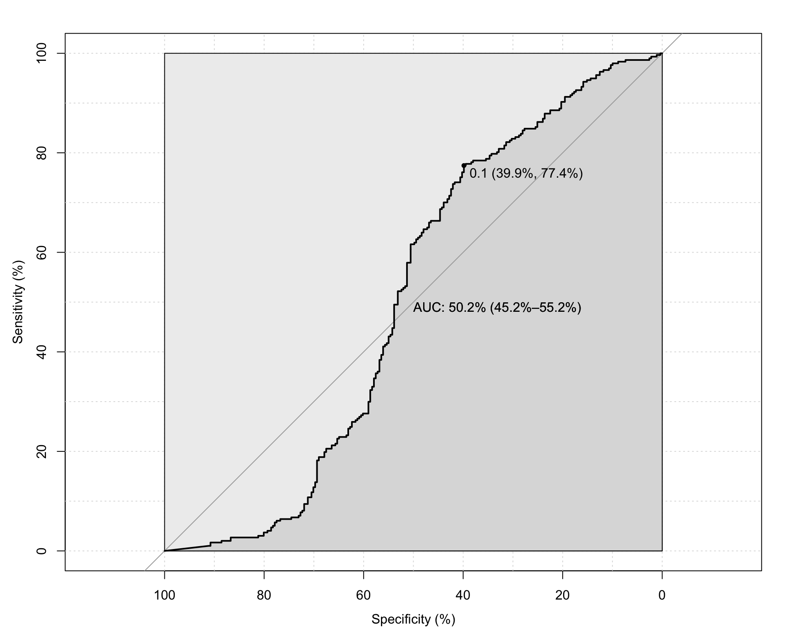
$ROC_properties
Feature AUC threshold sensitivity specificity ppv npv
1 Consistency 50.2081 0.05868314 77.44108 39.8524 58.52417 61.71429
ci_low ci_high
1 45.19057 55.22565
$Coningency_table
Ctl Syn
Ctl "108 (39.9%)" "163 (60.1%)"
Syn "67 (22.6%)" "230 (77.4%)"
$Descr_table
# A tibble: 2 × 4
group n Mean SD
<fct> <int> <dbl> <dbl>
1 Ctl 271 0.126 0.239
2 Syn 297 0.0690 0.136Setting levels: control = Ctl, case = Syn
Setting levels: control = Ctl, case = Syn
$ROC_properties
Feature AUC threshold sensitivity specificity ppv npv
1 Consistency_zs 70.3685 2.220246 76.43098 65.31365 70.71651 71.65992
ci_low ci_high
1 65.81407 74.92294
$Coningency_table
Ctl Syn
Ctl "177 (65.3%)" "94 (34.7%)"
Syn "70 (23.6%)" "227 (76.4%)"
$Descr_table
# A tibble: 2 × 4
group n Mean SD
<fct> <int> <dbl> <dbl>
1 Ctl 271 7.60 9.38
2 Syn 297 2.15 3.95Setting levels: control = Ctl, case = SynFor each category we compute the number of times the path intersects within each repetition. This can be conceptualized as drawing a segment between the ordered inducers of each category (i.e. between 0 and 9 for numbers) and count how many line intersect. Hence the number of segment is length(stimuli)-1, for each participant we sum the number of self-intersections.
Note: ideally we should shuffle the repetitions.

Setting levels: control = Ctl, case = Syn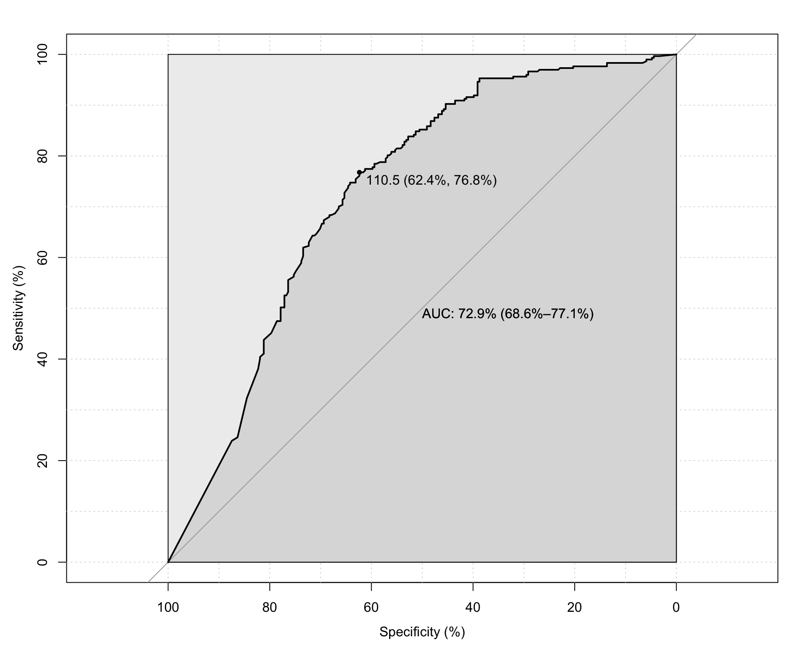
$ROC_properties
Feature AUC threshold sensitivity specificity ppv npv
1 SumID_lineInter 72.8534 110.5 76.76768 62.36162 69.09091 71.0084
ci_low ci_high
1 68.62725 77.07951
$Coningency_table
Ctl Syn
Ctl "169 (62.4%)" "102 (37.6%)"
Syn "69 (23.2%)" "228 (76.8%)"
$Descr_table
# A tibble: 2 × 4
group n Mean SD
<fct> <int> <dbl> <dbl>
1 Ctl 271 949. 1056.
2 Syn 297 202. 511.Setting levels: control = Ctl, case = SynWe will take advantage of the sf package and connect the x and y coordinates of ordered inducer with a segment.
Linking to GEOS 3.13.0, GDAL 3.8.5, PROJ 9.5.1; sf_use_s2() is TRUESpherical geometry (s2) switched off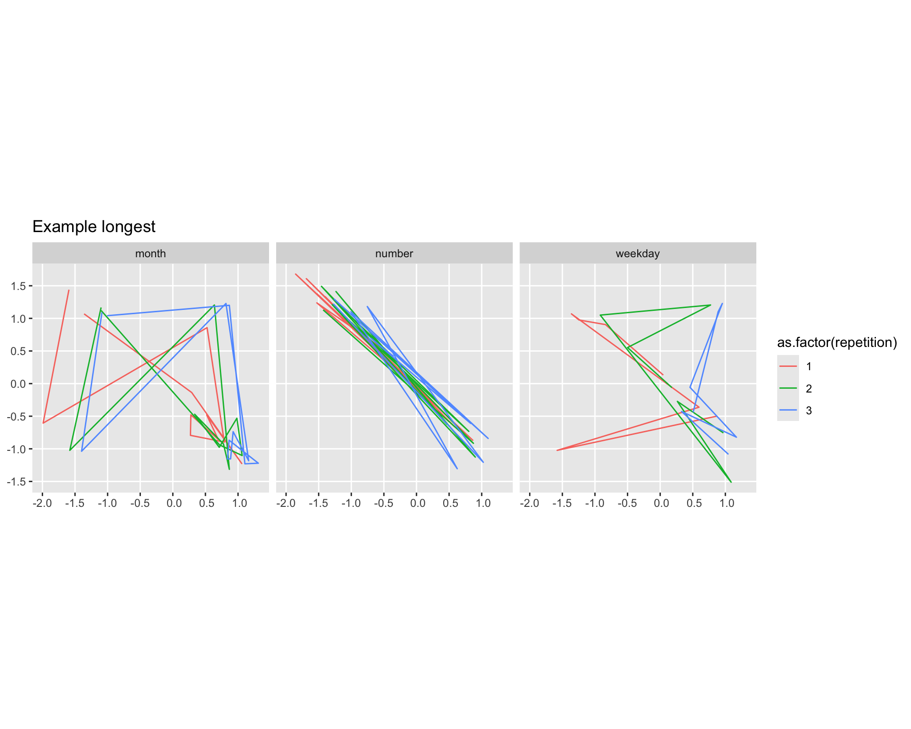
Setting levels: control = Ctl, case = Syn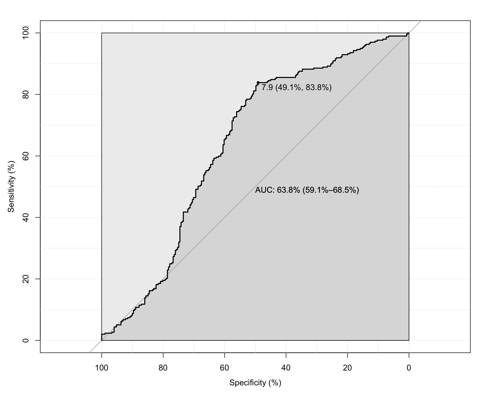
$ROC_properties
Feature AUC threshold sensitivity specificity ppv npv
1 GA_segm_leng 63.7755 7.856126 83.83838 49.07749 64.34109 73.48066
ci_low ci_high
1 59.07019 68.48084
$Coningency_table
Ctl Syn
Ctl "133 (49.1%)" "138 (50.9%)"
Syn "48 (16.2%)" "249 (83.8%)"
$Descr_table
# A tibble: 2 × 4
group n Mean SD
<fct> <int> <dbl> <dbl>
1 Ctl 271 7.57 3.06
2 Syn 297 6.15 2.29Setting levels: control = Ctl, case = SynSetting levels: control = Ctl, case = Syn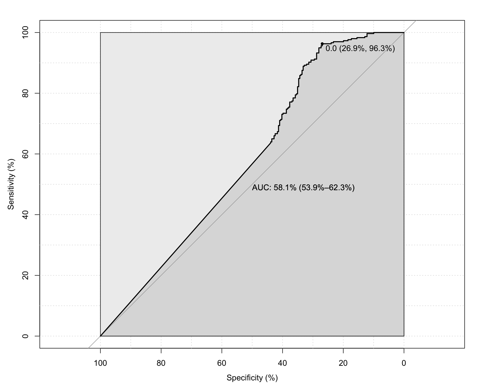
$ROC_properties
Feature AUC threshold sensitivity specificity ppv npv
1 GA_BtwDist 58.11 0.03093695 96.2963 26.93727 59.09091 86.90476
ci_low ci_high
1 53.88037 62.33964
$Coningency_table
Ctl Syn
Ctl "73 (26.9%)" "198 (73.1%)"
Syn "11 (3.7%)" "286 (96.3%)"
$Descr_table
# A tibble: 2 × 4
group n Mean SD
<fct> <int> <dbl> <dbl>
1 Ctl 271 0.0792 0.172
2 Syn 297 0.00866 0.0410Setting levels: control = Ctl, case = Syn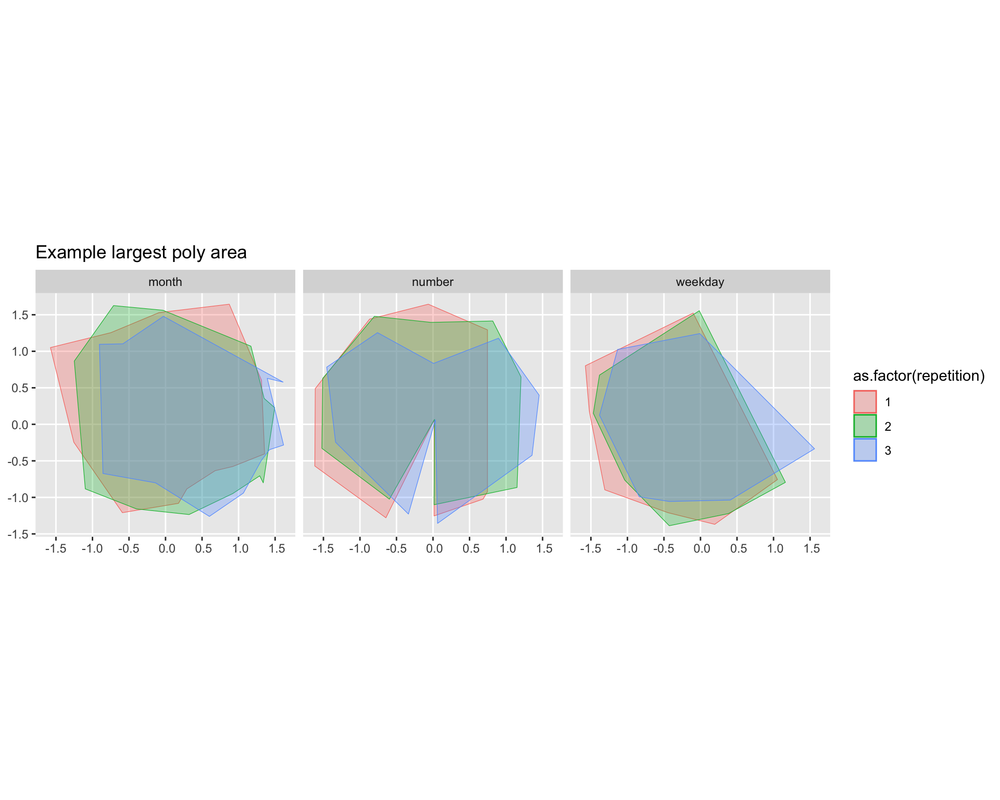


Setting levels: control = Ctl, case = Syn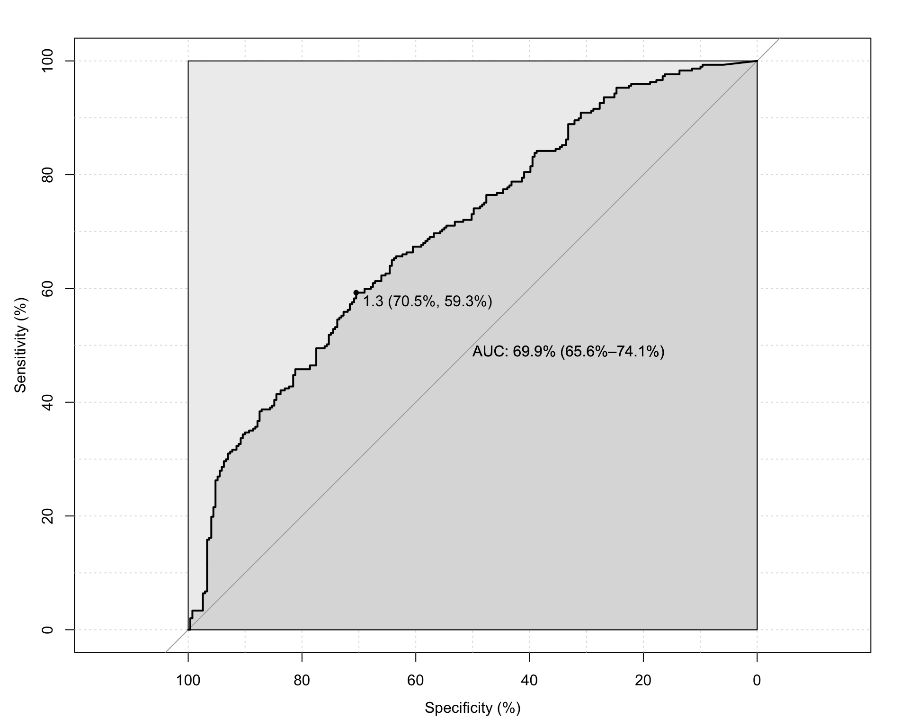
$ROC_properties
Feature AUC threshold sensitivity specificity ppv npv ci_low
1 GA_areaPoly 69.8958 1.288086 59.25926 70.4797 68.75 61.21795 65.64189
ci_high
1 74.14962
$Coningency_table
Ctl Syn
Ctl "191 (70.5%)" "80 (29.5%)"
Syn "121 (40.7%)" "176 (59.3%)"
$Descr_table
# A tibble: 2 × 4
group n Mean SD
<fct> <int> <dbl> <dbl>
1 Ctl 271 0.962 0.985
2 Syn 297 1.74 1.25 Setting levels: control = Ctl, case = Syn
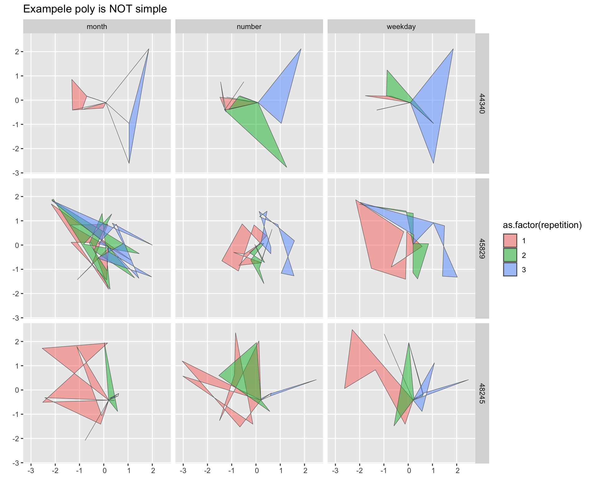
Setting levels: control = Ctl, case = Syn
$ROC_properties
Feature AUC threshold sensitivity specificity ppv npv
1 GA_isSimple 69.3572 0.1666667 74.41077 56.45756 65.19174 66.81223
ci_low ci_high
1 65.06818 73.64615
$Coningency_table
Ctl Syn
Ctl "153 (56.5%)" "118 (43.5%)"
Syn "76 (25.6%)" "221 (74.4%)"
$Descr_table
# A tibble: 2 × 4
group n Mean SD
<fct> <int> <dbl> <dbl>
1 Ctl 271 0.214 0.238
2 Syn 297 0.390 0.270Setting levels: control = Ctl, case = Synis topologically valid:
From the package description: “For projected geometries, st_make_valid uses the lwgeom_makevalid method also used by the PostGIS command ST_makevalid if the GEOS version linked to is smaller than 3.8.0, and otherwise the version shipped in GEOS; for geometries having ellipsoidal coordinates s2::s2_rebuild is being used.” From https://postgis.net/docs/ST_IsValid.html: value is well-formed and valid in 2D according to the OGC rules. (Open Geopsatial Consotrtium)


Setting levels: control = Ctl, case = Syn
$ROC_properties
Feature AUC threshold sensitivity specificity ppv npv
1 GA_isValidStruct 77.7473 0.1666667 70.70707 75.27675 75.81227 70.10309
ci_low ci_high
1 74.01116 81.48351
$Coningency_table
Ctl Syn
Ctl "204 (75.3%)" "67 (24.7%)"
Syn "87 (29.3%)" "210 (70.7%)"
$Descr_table
# A tibble: 2 × 4
group n Mean SD
<fct> <int> <dbl> <dbl>
1 Ctl 271 0.118 0.180
2 Syn 297 0.366 0.270Setting levels: control = Ctl, case = Syn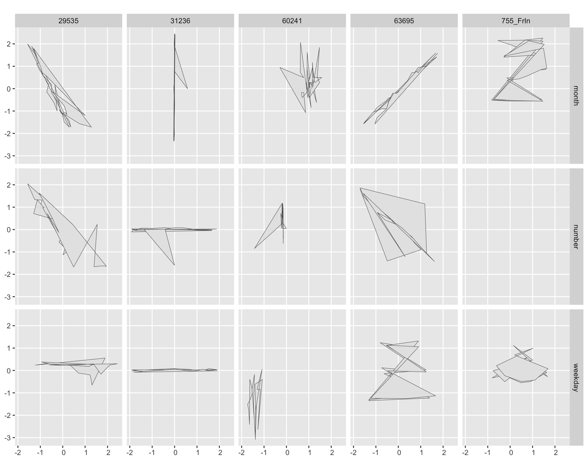
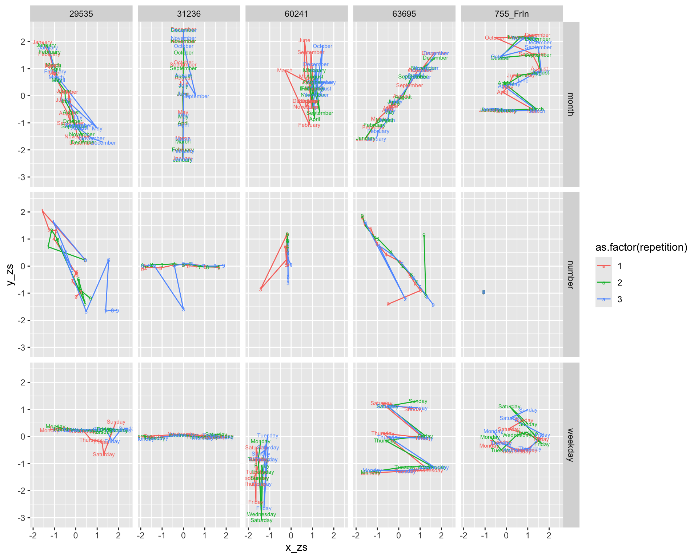
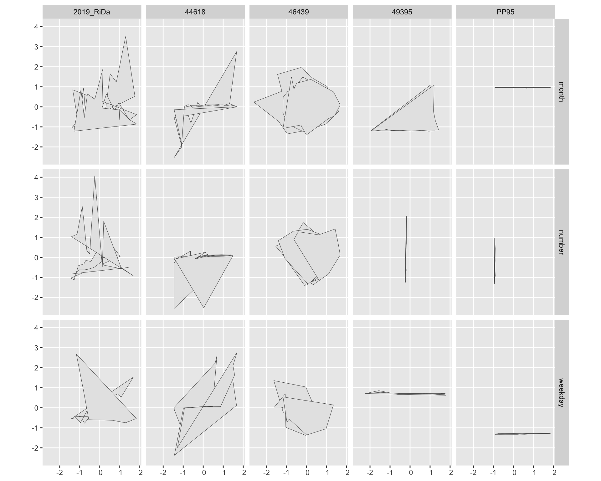
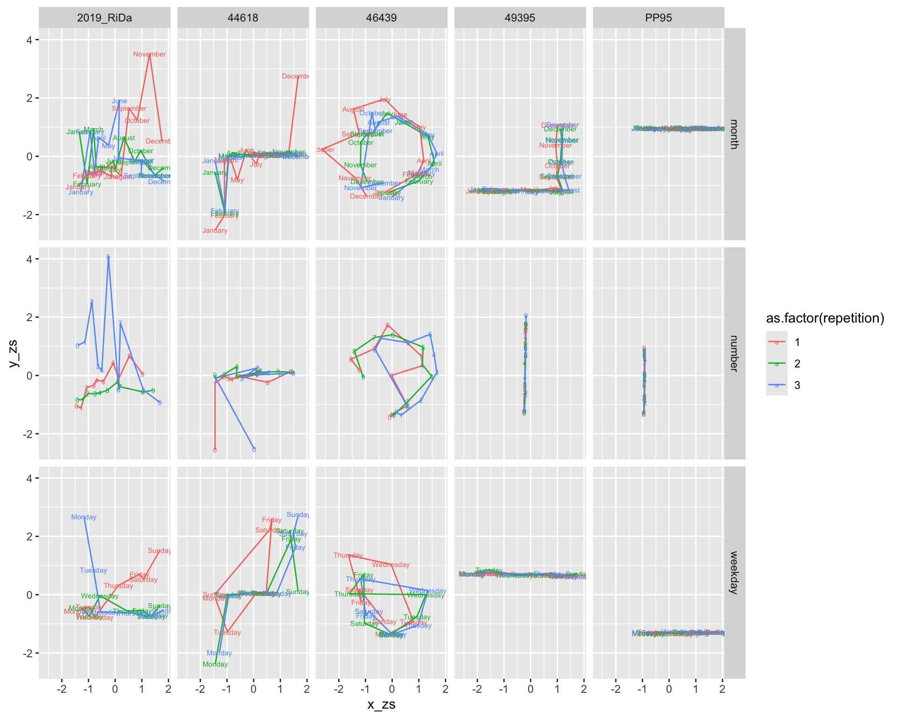
See: https://r-spatial.org/book/03-Geometries.html#sec-opgeom See: https://en.wikipedia.org/wiki/DE-9IM
DE-9IM is a standard for several topological model’s features. It is called by st_relate. It returns a 3 x 3 matrix (DE9IM) for each relations:
\({\displaystyle \operatorname {DE9IM} (a,b)={\begin{bmatrix}\dim(I(a)\cap I(b))&\dim(I(a)\cap B(b))&\dim(I(a)\cap E(b))\\\dim(B(a)\cap I(b))&\dim(B(a)\cap B(b))&\dim(B(a)\cap E(b))\\\dim(E(a)\cap I(b))&\dim(E(a)\cap B(b))&\dim(E(a)\cap E(b))\end{bmatrix}}}\)
dim$ {}$ is the dimension of the intersection (∩) of the interior (I), boundary (B), and exterior (E) of geometries a and b.
Hence it returns a spatial predicate wdefined with mas domains:
Ctl Syn Subs
212101212 952 1568 0.6071429
2121012F2 2 2 1.0000000
21210F212 0 1 0.0000000
212111212 4 8 0.5000000
212F01212 18 8 2.2500000
212F01FF2 15 2 7.5000000
212F0F212 12 2 6.0000000
212F0FFF2 5 1 5.0000000
212F1FFF2 1 0 Inf
2F2101212 13 1 13.0000000
2F21012F2 10 4 2.5000000
2F2F01212 16 2 8.0000000
2F2F01FF2 41 4 10.2500000
2FF10F212 12 1 12.0000000
2FF10F2F2 3 0 Inf
2FF11F212 1 0 Inf
2FFF0F212 32 3 10.6666667
2FFF0FFF2 138 19 7.2631579
2FFF1FFF2 626 853 0.7338804
FF2F01212 6 0 Inf
FF2F01FF2 27 6 4.5000000
FF2F11212 1 0 Inf
FF2FF1212 294 124 2.3709677
FFFF0F212 26 2 13.0000000
FFFF0FFF2 184 62 2.9677419 Ctl Syn Subs
212101212 1009 1629 0.6193984
2121012F2 0 1 0.0000000
21210F212 2 3 0.6666667
21210F2F2 1 0 Inf
212111212 12 9 1.3333333
212F01212 12 2 6.0000000
212F01FF2 11 0 Inf
212F0F212 12 2 6.0000000
212F0FFF2 5 1 5.0000000
212F11212 1 0 Inf
212F11FF2 1 0 Inf
2F2101212 13 7 1.8571429
2F21012F2 27 6 4.5000000
2F2111212 1 0 Inf
2F2F01212 20 1 20.0000000
2F2F01FF2 44 10 4.4000000
2FF10F212 21 2 10.5000000
2FF10F2F2 8 1 8.0000000
2FF11F2F2 1 0 Inf
2FFF0F212 59 6 9.8333333
2FFF0FFF2 173 31 5.5806452
2FFF1FFF2 591 846 0.6985816
FF2F01212 4 2 2.0000000
FF2F01FF2 40 4 10.0000000
FF2F11212 3 0 Inf
FF2FF1212 99 39 2.5384615
FFFF0F212 31 8 3.8750000
FFFF0FFF2 238 63 3.7777778 Ctl Syn Subs
212101212 939 1569 0.5984704
2121012F2 0 2 0.0000000
21210F212 0 1 0.0000000
21210F2F2 1 0 Inf
212111212 8 7 1.1428571
212F01212 12 3 4.0000000
212F01FF2 14 1 14.0000000
212F0F212 23 7 3.2857143
212F0FFF2 5 0 Inf
212F11212 1 0 Inf
2F2101212 18 5 3.6000000
2F21012F2 11 1 11.0000000
2F2111212 1 0 Inf
2F2F01212 12 1 12.0000000
2F2F01FF2 44 3 14.6666667
2FF10F212 7 0 Inf
2FF10F2F2 4 1 4.0000000
2FFF0F212 39 8 4.8750000
2FFF0FFF2 147 27 5.4444444
2FFF1FFF2 611 853 0.7162954
FF2F01212 6 2 3.0000000
FF2F01FF2 30 4 7.5000000
FF2F11212 2 0 Inf
FF2FF1212 279 125 2.2320000
FFFF0F212 40 4 10.0000000
FFFF0FFF2 185 49 3.7755102 Ctl Syn Subs
2121012122 939 1569 0.5984704
212101212 952 1568 0.6071429
2121012121 1009 1629 0.6193984
2FFF1FFF21 591 846 0.6985816
2FFF1FFF22 611 853 0.7162954
2FFF1FFF2 626 853 0.7338804
FF2FF12122 279 125 2.2320000
FF2FF1212 294 124 2.3709677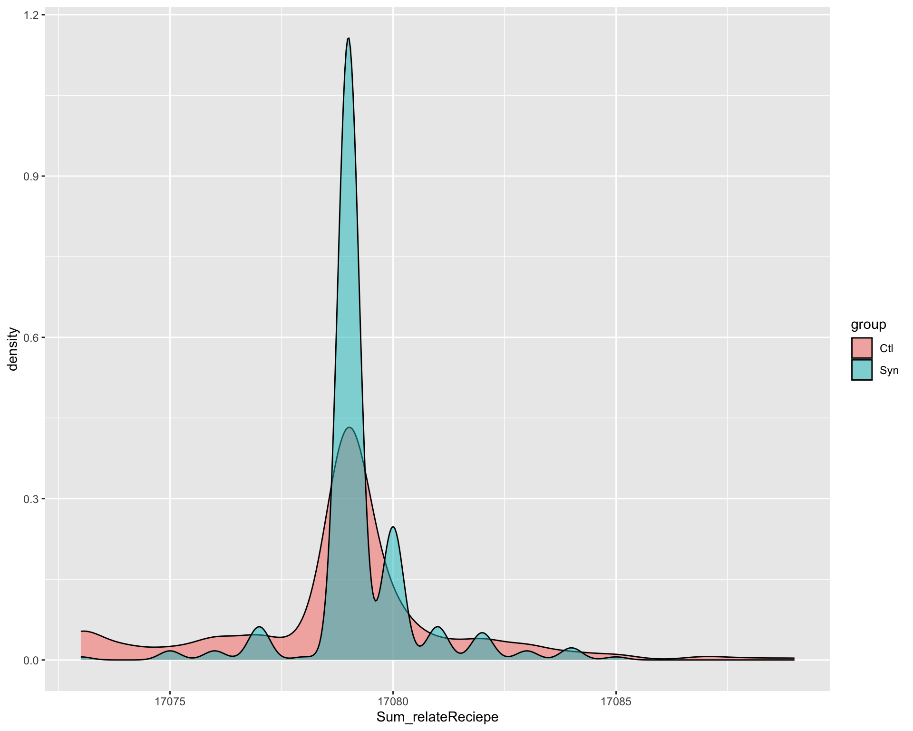
2FFF1FFF2: S1 Interior vs. S2 Interior: The interiors intersect in 2 dimensions (2). S1 Interior vs. S2 Boundary: No intersection (F). S1 Interior vs. S2 Exterior: No intersection (F). S1 Boundary vs. S2 Interior: No intersection (F). S1 Boundary vs. S2 Boundary: A 1-dimensional intersection occurs (e.g., they share a common line segment) (1). S1 Boundary vs. S2 Exterior: No intersection (F). S1 Exterior vs. S2 Interior: No intersection (F). S1 Exterior vs. S2 Boundary: No intersection (F). S1 Exterior vs. S2 Exterior: The exteriors intersect in 2 dimensions (2).
2FFF0FFF2: 2: The intersection of the first geometry’s interior and the second geometry’s interior creates a polygon (a two-dimensional intersection). F: The interior of the first geometry does not intersect the boundary of the second. F: The interior of the first geometry does not intersect the exterior of the second. F: The boundary of the first geometry does not intersect the interior of the second. 0: The boundary of the first geometry intersects the boundary of the second geometry at a point (a zero-dimensional intersection). F: The boundary of the first geometry does not intersect the exterior of the second. F: The exterior of the first geometry does not intersect the interior of the second. F: The exterior of the first geometry does not intersect the boundary of the second. 2: The exterior of the first geometry intersects the exterior of the second geometry, creating a polygon (a two-dimensional intersection).
FFFF0FFF2: F (False): The intersection of the interior of the first geometry with the interior of the second geometry is empty. F (False): The intersection of the interior of the first geometry with the boundary of the second geometry is empty. F (False): The intersection of the interior of the first geometry with the exterior of the second geometry is empty. F (False): The intersection of the boundary of the first geometry with the interior of the second geometry is empty. 0 (Zero-Dimensional): The intersection of the boundary of the first geometry with the boundary of the second geometry is a point (0-dimensional). F (False): The intersection of the boundary of the first geometry with the exterior of the second geometry is empty. F (False): The intersection of the exterior of the first geometry with the interior of the second geometry is empty. F (False): The intersection of the exterior of the first geometry with the boundary of the second geometry is empty. 2 (Two-Dimensional): The intersection of the exterior of the first geometry with the exterior of the second geometry is a 2-dimensional area.
Setting levels: control = Ctl, case = Syn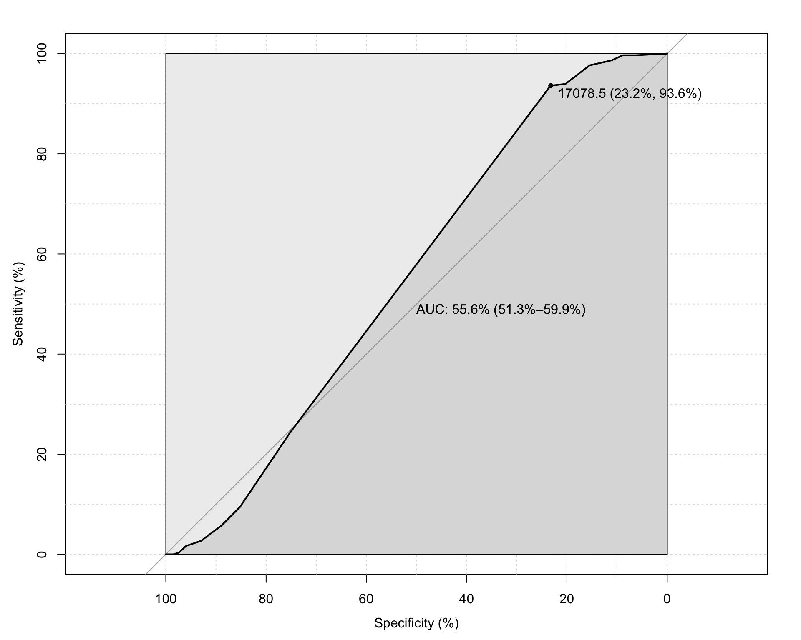
$ROC_properties
Feature AUC threshold sensitivity specificity ppv npv
1 Sum_relateReciepe 55.6077 17078.5 93.60269 23.24723 57.20165 76.82927
ci_low ci_high
1 51.33587 59.87961
$Coningency_table
Ctl Syn
Ctl "63 (23.2%)" "208 (76.8%)"
Syn "19 (6.4%)" "278 (93.6%)"
$Descr_table
# A tibble: 2 × 4
group n Mean SD
<fct> <int> <dbl> <dbl>
1 Ctl 271 17079. 2.62
2 Syn 297 17079. 1.28Setting levels: control = Ctl, case = Syn
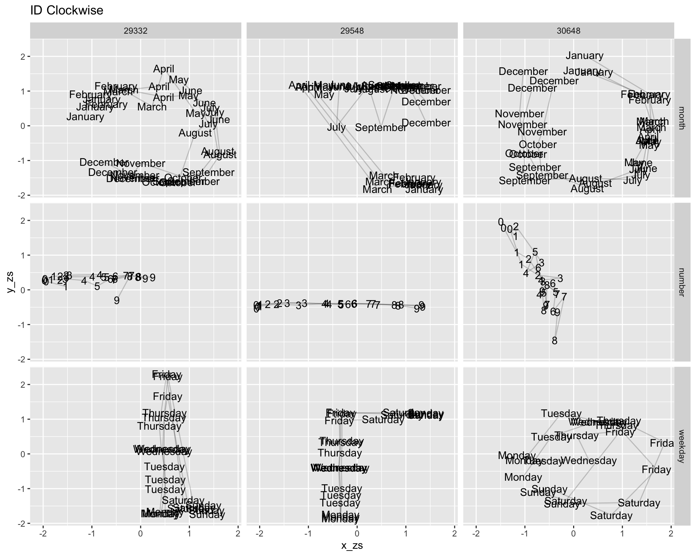
Setting levels: control = Ctl, case = Syn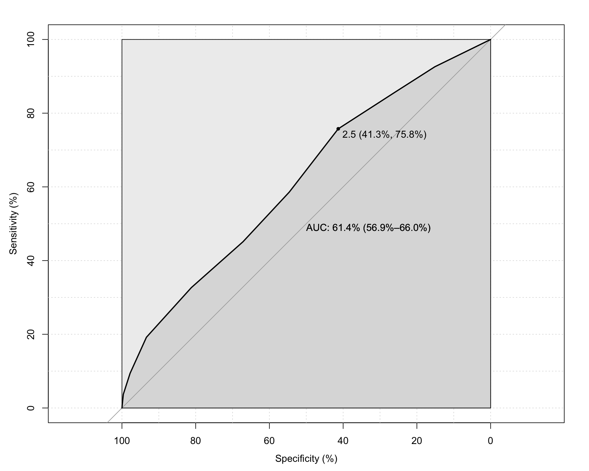
$ROC_properties
Feature AUC threshold sensitivity specificity ppv npv
1 Sum_isClockwise 61.4279 2.5 75.75758 41.32841 58.59375 60.86957
ci_low ci_high
1 56.87297 65.98289
$Coningency_table
Ctl Syn
Ctl "112 (41.3%)" "159 (58.7%)"
Syn "72 (24.2%)" "225 (75.8%)"
$Descr_table
# A tibble: 2 × 4
group n Mean SD
<fct> <int> <dbl> <dbl>
1 Ctl 271 3.24 2.24
2 Syn 297 4.23 2.40Setting levels: control = Ctl, case = Syn
Setting levels: control = Ctl, case = Syn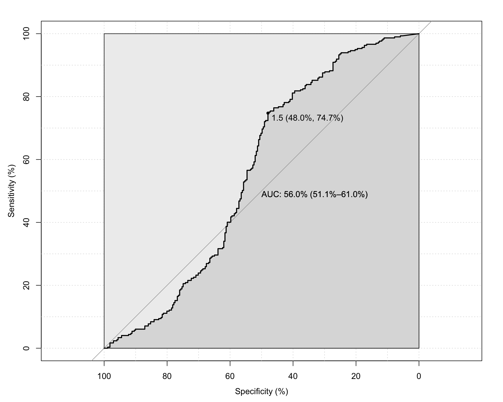
$ROC_properties
Feature AUC threshold sensitivity specificity ppv npv
1 GA_area_convhull 56.0389 1.491143 74.74747 47.97048 61.15702 63.41463
ci_low ci_high
1 51.11374 60.96398
$Coningency_table
Ctl Syn
Ctl "130 (48%)" "141 (52%)"
Syn "75 (25.3%)" "222 (74.7%)"
$Descr_table
# A tibble: 2 × 4
group n Mean SD
<fct> <int> <dbl> <dbl>
1 Ctl 271 2.30 1.88
2 Syn 297 2.58 1.45Setting levels: control = Ctl, case = Syn| Feature | AUC | threshold | sensitivity | specificity | ppv | npv | ci_low | ci_high | |
|---|---|---|---|---|---|---|---|---|---|
| 10 | GA_isValidStruct | 77.7473 | 1.666667e-01 | 70.70707 | 75.27675 | 75.81227 | 70.10309 | 74.01116 | 81.48351 |
| 5 | SumID_lineInter | 72.8534 | 1.105000e+02 | 76.76768 | 62.36162 | 69.09091 | 71.00840 | 68.62725 | 77.07951 |
| 4 | Consistency_zs | 70.3685 | 2.220246e+00 | 76.43098 | 65.31365 | 70.71651 | 71.65992 | 65.81407 | 74.92294 |
| 8 | GA_areaPoly | 69.8958 | 1.288086e+00 | 59.25926 | 70.47970 | 68.75000 | 61.21795 | 65.64189 | 74.14962 |
| 9 | GA_isSimple | 69.3572 | 1.666667e-01 | 74.41077 | 56.45756 | 65.19174 | 66.81223 | 65.06818 | 73.64615 |
| 2 | SD_ID_ysc | 69.1515 | 1.160754e-01 | 81.81818 | 59.40959 | 68.83853 | 74.88372 | 64.62566 | 73.67742 |
| 6 | GA_segm_leng | 63.7755 | 7.856126e+00 | 83.83838 | 49.07749 | 64.34109 | 73.48066 | 59.07019 | 68.48084 |
| 1 | SD_ID_xsc | 61.8348 | 1.217639e-01 | 89.22559 | 44.28044 | 63.70192 | 78.94737 | 57.01230 | 66.65736 |
| 12 | Sum_isClockwise | 61.4279 | 2.500000e+00 | 75.75758 | 41.32841 | 58.59375 | 60.86957 | 56.87297 | 65.98289 |
| 7 | GA_BtwDist | 58.1100 | 3.093700e-02 | 96.29630 | 26.93727 | 59.09091 | 86.90476 | 53.88037 | 62.33964 |
| 13 | GA_area_convhull | 56.0389 | 1.491143e+00 | 74.74747 | 47.97048 | 61.15702 | 63.41463 | 51.11374 | 60.96398 |
| 11 | Sum_relateReciepe | 55.6077 | 1.707850e+04 | 93.60269 | 23.24723 | 57.20165 | 76.82927 | 51.33587 | 59.87961 |
| 3 | Consistency | 50.2081 | 5.868310e-02 | 77.44108 | 39.85240 | 58.52417 | 61.71429 | 45.19057 | 55.22565 |
Setting levels: control = Ctl, case = SynSetting direction: controls < cases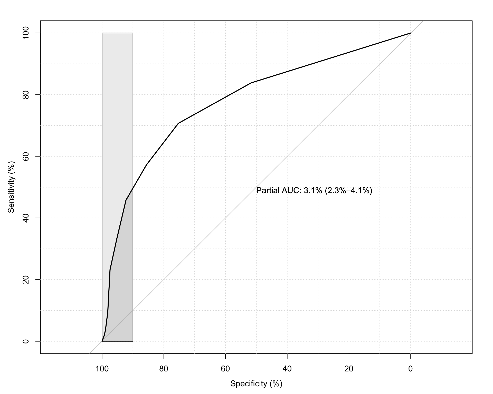
Setting levels: control = Ctl, case = SynSetting direction: controls > cases
Bootstrap test for two correlated ROC curves
data: Sum_isValidStruct and Consistency_zs in ds_Q by group (Ctl, Syn)
D = 6.13, boot.n = 100, boot.stratified = 1, p-value = 8.79e-10
alternative hypothesis: true difference in AUC is not equal to 0
sample estimates:
pAUC (100-90 specificity) of roc1 pAUC (100-90 specificity) of roc2
3.05545340 0.06696734 Materials are desribed here https://osf.io/pjb6e/?view_only=d467ebf4c1f94076ae4ac61298255065.
From the different features we extracted, topological validity across the repetitions appeared to be the one leading to the largest Area Under the Curve. The optimal cutoff was exactly 1.5, leading to a sensitivity () and specificity ().
The optimal criterion ineeds to be informed about the order between inducers (i.e. to construct the polygons) and interestingly suggests that synthetic inducer are structurally mapped following topological rules analogous to geographical space structures. Hence suggesting a spatial nature for the synthetic forms of space sequence synesthetes.
Setting levels: control = Ctl, case = Syn
Setting levels: control = Ctl, case = Syn
Setting levels: control = Ctl, case = Syn
Setting levels: control = Syn, case = Ctl
Setting levels: control = Syn, case = Ctl
Setting levels: control = Syn, case = Ctl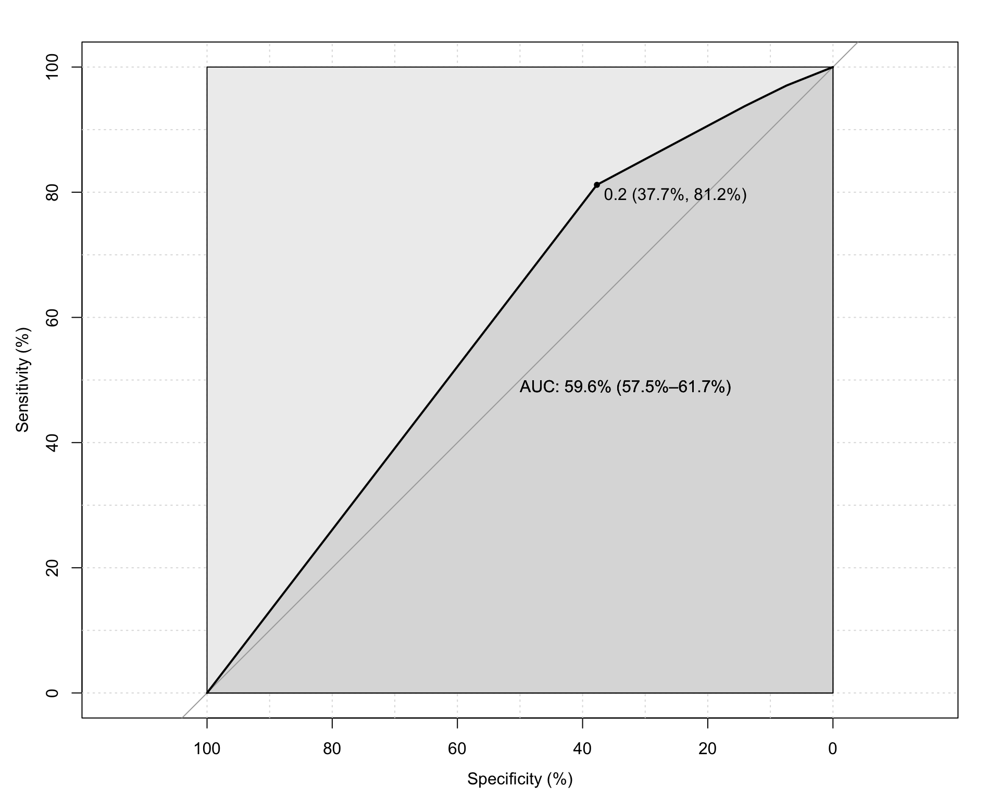
Setting levels: control = Ctl, case = Syn
Setting levels: control = Ctl, case = Syn
Setting levels: control = Ctl, case = Syn
| Feature | AUC | threshold | sensitivity | specificity | ppv | npv | ci_low | ci_high | |
|---|---|---|---|---|---|---|---|---|---|
| 7 | SumID_lineInterCond_month | 77.6001 | 30.0000000 | 79.46128 | 68.63469 | 73.52025 | 75.30364 | 76.96926 | 78.23095 |
| 4 | GA_isValidStructCond_month | 74.2213 | 0.1666667 | 84.50185 | 59.93266 | 65.80460 | 80.90909 | 72.21873 | 76.22388 |
| 9 | SumID_lineInterCond_number | 70.3368 | 25.0000000 | 69.36027 | 65.31365 | 68.66667 | 66.04478 | 69.56772 | 71.10593 |
| 3 | Consistency_zs_Cond_number | 69.4677 | 0.7336641 | 79.46128 | 60.14760 | 68.60465 | 72.76786 | 68.63720 | 70.29828 |
| 1 | Consistency_zs_Cond_month | 68.9627 | 0.7376572 | 75.42088 | 66.42066 | 71.11111 | 71.14625 | 68.18580 | 69.73958 |
| 8 | SumID_lineInterCond_weekday | 67.7563 | 59.5000000 | 92.59259 | 40.59041 | 63.07339 | 83.33333 | 66.83536 | 68.67721 |
| 2 | Consistency_zs_Cond_weekday | 67.6625 | 0.5399420 | 77.44108 | 58.67159 | 67.25146 | 70.35398 | 66.65450 | 68.67046 |
| 5 | GA_isValidStructCond_weekday | 66.5474 | 0.5000000 | 88.56089 | 36.70034 | 56.07477 | 77.85714 | 64.20367 | 68.89111 |
| 6 | GA_isValidStructCond_number | 59.6171 | 0.1666667 | 81.18081 | 37.71044 | 54.32099 | 68.71166 | 57.51223 | 61.72193 |